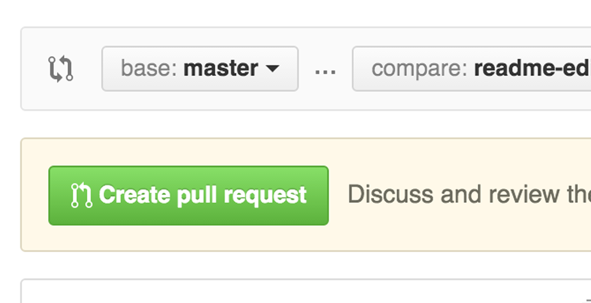

Github是一个开源代码库以及版本控制系统，本文通过一个简单的实例来教大家如何使用Github进行版本控制和多人协作。
知道GitHub已经有一段时间了，大概两年吧，但是一直也没有使用，主要原因还是之前所有的程序啥的都是自己一个人在弄，没有什么版本控制的需要。现在以发展的观点来看，GitHub除了可以作为开源代码的网盘和版本控制工具使用，平时用来同步一些其它文件共享给小伙伴们也是不错的。
那么今天就写了个入门的指南，普及一下GibHub的基础使用方法。内容基本就是对官司网新手教程的翻译。
==========================================正文分割线======================================
程序员应该都知道Hello World，它几乎是所有编程语言教程的起步实例，那么我们这里也从Hello World开始我们的GitHub之旅吧！
通过本教程你将学会：
* 创建和使用一个知识库
* 创建和使用一个分支
* 更改文件并保存到GitHub
* 创建以及合并请求
什么是GitHub?
GitHub是一个源代码的在线托管平台，提供了版本控制和协同工作功能。它能让您方便的和你的小伙伴们一起为一个项目工作，即使你和你的小伙伴们来自世界各地。
这个教程将会让您了解GitHub的一些基本元素，诸如知识库，分支，提交和合并请求等。你将会创建一个你自己的Hello World知识库并学习GitHub的修改请求的合并流程，这是目前最方便和也是最流行的版本控制方法。
不需要有编码知识哦！
本教程的学习只需要注册一个GitHub账号就可以了，不需要有任何的编码知识，也不需要使用什么命令行或者安装Git。
小贴士: 在新的窗口打开此教程，这样可以一编学习一边练习。
步骤一. 创建一个知识库
在GitHub里，知识库总是用来组织某一个特定的项目。知识库可以包含文件夹，文件，图片，音频，视频，数据表或数据集–任何你的项目需要的文件都可以。我们同时建议你在项目知识库的根目录下创建一个README文件，用来写一些这个项目的基本信息。GitHub在您创建知识库的同时往往就已经帮你创建了一个空的README文件了，另外你也可以选择是否要创建许可文件。
你的hello-world知识库可以用来保存你的主意，资源或任何想要和你的小伙伴分享或讨论的文件。
开始创建知识库

最后点击 Create repository.
步骤二. 创建一个分支
分支是同时对一个知识库或者说项目进行工作进行版本区分的方式。
默认的情况每一个知识库都会有一个master分支，这是所在项目的主分支，可以理解为项目的生产环境或正式环境。我们在对项目进行修改的时候我们会新建分支进行修改，并最后提交到master主分支。
当你创建一个分支的时候，实际是它是master的一个拷贝或叫境像，如果有人在你修改的同时改动了master里的内容，你也可以从master获取这些更新并拉到你创建的分支中来。
下面的示意图显示了如下信息:
* 一个 master主分支
* 一个叫 feature 的新的分支(通过名字可以知识我们可能在这个分支做一些展示层的修改)
* feature分支在合并到master分支所经历的步骤

在此之前是否会像这样保存一些文件：
* story.txt
* story-joe-edit.txt
* story-joe-edit-reviewed.txt
分支所要起到的作用就像上面这样，不同的人对同一文件的修改可以体现在不同的分支中.
当所有修改的完成的时候我们可以合并到master分支中去.
开始创建一个分支：
1. 进入你新建的知识库 hello-world.
2. 点击打开master分支的下拉菜单.
3. 给分支起一个名字叫 readme-edits.
4. 选择 Create branch 按钮或直接回车.

这样你的项目(知识库)就有了两个分支, master 和 readme-edits. 目前来看他们是完全一样的，接下来我们要对它进行一些修改。
步骤三. 修改并提交
目前我们就在 readme-edits 分支里, 这是 master的一个拷贝. 接下来让我们进行一些修改.
在GitHub我们把修改和提交叫作commits. 每一次的commit 都需要一个commit message, 用来说明这次修改的目的. Commit messages保存了所有修改的日志，这样别人可以看出来这个项目作了哪些修改和为什么要做这些修改。
修改并提交

这次修改会更新readme-edits 分支中的README文件, 这时readme-edits分支的内容和master就不一样了。
步骤四. 创建一个合并请求
合并请求是GitHub进行团队协作的核心，当你创建一个合并请求的时候，你所做的就是提议将你的修改合并到别的分支中去。合并请求时会显示两个分支的不同之处，通过绿色和红色来标识新增或删除。
我们来为刚刚对README的修改创建一个合并请求：
点击Pull Request选项卡, 然后选择New pull request .
选择你新建的分支, readme-edits, 将其和 master进行比较.
可以看到两个文件的不同之处，确认是否是你所需要的修改.
确认无误后点击 Create Pull Request按钮.

给你的合并请求起个名字，并写一些描述.
当以上步骤都完成了之后点击 Create pull request!
步骤五. 合并请求
在这最后一步我们要做的就是把你修改过的分支readme-edits合并到master分支中去。
1. 点击 Merge pull request按钮.
2. 点击Confirm merge.
3. 点击 Delete branch 按钮来删除已经不需要的分支.


好了！
教程到这里就结束了，应该学会了如何创建知识库和分支，如何提交修改，如何合并分支这些基本功能了吧。这些就是GitHub的基础使用。另外GitHub除了网页版另外还有PC版可以下载安装，使用起来也很方便。